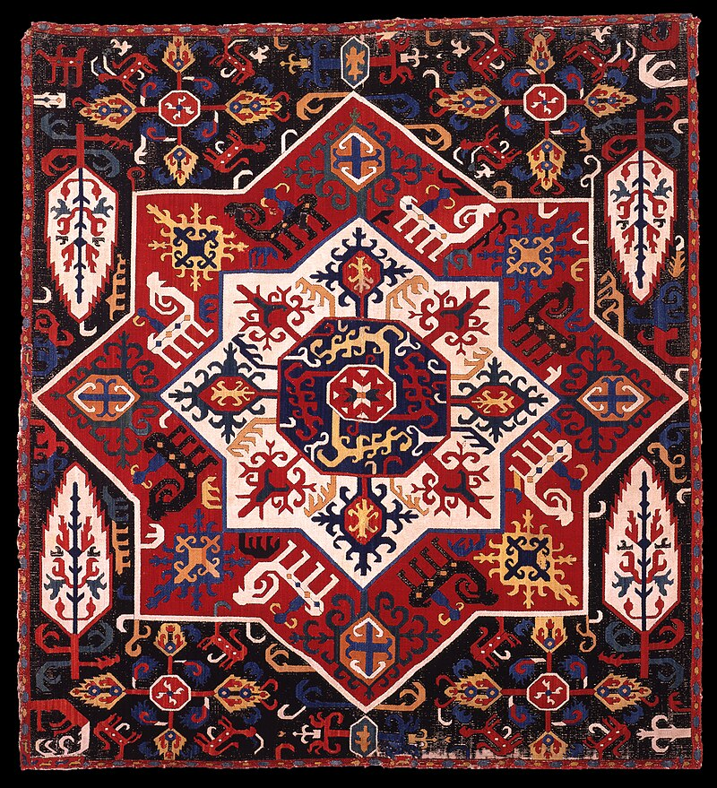

Welcome to My Blog
Aida cloth (sometimes called Java canvas) is an open, even-weave fabric traditionally used for cross-stitch embroidery. This cotton fabric has a natural mesh that facilitates cross-stitching and enough natural stiffness that the crafter does not need to use an embroidery hoop.
Aida cloth is manufactured with various size spaces or holes between the warp and weft to accommodate different thicknesses of yarn. These are described by the count. For example, a 10-count aida cloth would have 10 squares per linear inch. Typical sizes are 7, 10, 11, 12, 14, 16, 18 and 20 count, ranked from the coarsest to the finest count. Traditional colours are white and ecru, though black, grey, shades of tan and brown, and other brighter colors are also available. Aida cloth is sold in precut sheets or in bolts of 40" - 60" width at most craft stores. Aida cloth has a tendency to fray and often needs hemming before use. It should never be laundered prior to craft work and tends to contract when the finished item is washed in soap and water. Hand washing improves the appearance of finished cross-stitching because Aida cloth naturally contracts in specific areas where it is embroidered.
| Embroidery | |
| Styles | cross-stitch |
| Smocking | |
| Cutwork | |
| Goldwork | |
| Candlewicking | |
| Stitches | Banket |
| Buttonhole | |
| Backstitch | |